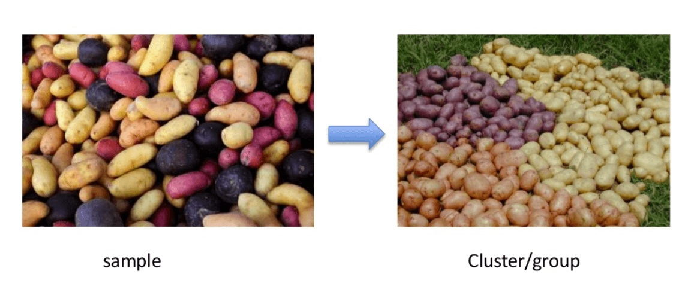

Nenadzirano učenje
Učenje bez nadzora je tehnika mašinskog učenja u kojoj korisnici ne moraju da nadgledaju model. Umesto toga, omogućava modelu da radi sam kako bi otkrio obrasce i informacije koje ranije nisu bile otkrivene. Uglavnom se bavi neoznačenim podacima. Učenje bez nadzora ne može se direktno primeniti na problem regresije ili klasifikacije jer za razliku od nadzirnog učenja, imamo ulazne podatke, ali nemamo odgovarajuće izlazne podatke. Cilj nenadzornog učenja je pronaći osnovnu strukturu skupa podataka, grupisati te podatke prema sličnostima i predstaviti taj skup podataka u komprimovanom formatu.Algoritmi za učenje bez nadzora
Algoritmi za učenje bez nadzora omogućavaju korisnicima da obavljaju složenije zadatke obrade u poređenju sa učenjem pod nadzorom. Mada, učenje bez nadzora može biti nepredvidljivije u poređenju sa drugim prirodnim metodama učenja.
Vrste algoritama za učenje bez nadzora
Grupisanje
Grupisanje je važan koncept kada je u pitanju učenje bez nadzora. Uglavnom se bavi pronalaženjem strukture ili obrasca u kolekciji nekategorisanih podataka. Algoritmi klastera za učenje bez nadzora će obraditi vaše podatke i pronaći prirodne klastere (grupe) ako postoje u podacima. Takođe možete da izmenite koliko klastera vaši algoritmi treba da identifikuju. Omogućava vam da prilagodite granularnost ovih grupa. Postoje različite vrste grupisanja koje možete koristiti:
Ekskluzivno
U ovoj metodi grupisanja, podaci se grupišu na način da jedan podatak može pripadati samo jednom klasteru.
Aglomerativno
U ovoj tehnici grupisanja, svaki podatak je klaster. Iterativne unije između dva najbliža klastera smanjuju broj klastera.
Preklapanje
U ovoj tehnici, rasplinuti skupovi se koriste za grupisanje podataka. Svaka tačka može pripadati dva ili više klastera sa posebnim stepenom članstva. Ovde će podaci biti povezani sa odgovarajućom vrednošću članstva.
Probabilistički
Ova tehnika koristi distribuciju verovatnoće za kreiranje klastera.
Udruženje
Pravila asocijacije vam omogućavaju da uspostavite asocijacije između objekata podataka unutar velikih baza podataka. Ova tehnika bez nadzora se odnosi na otkrivanje zanimljivih odnosa između varijabli u velikim bazama podataka.Drugi primeri:
-Podgrupa pacijenata sa rakom grupisanih prema merenjima ekspresije gena
-Grupe kupaca na osnovu njihove istorije pregledanja i kupovine
-Grupa filmova prema oceni koju daju gledaoci filmova